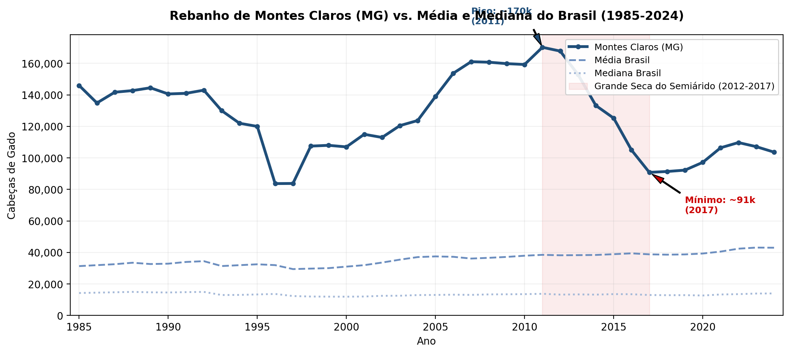
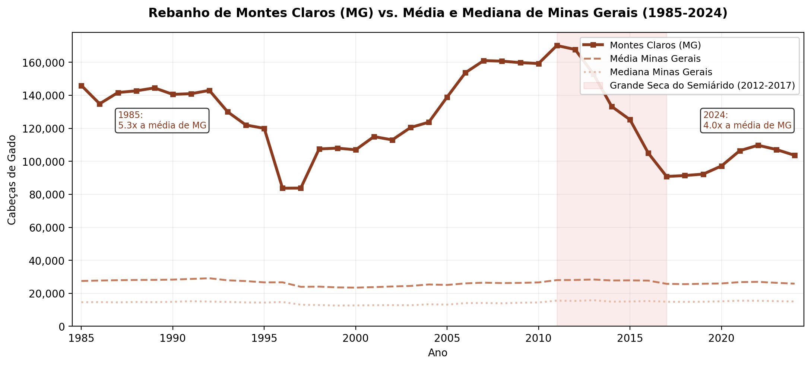
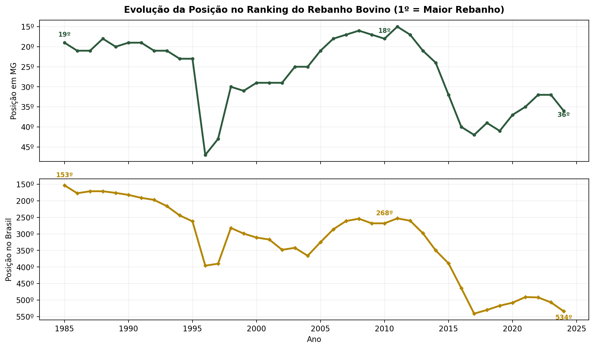
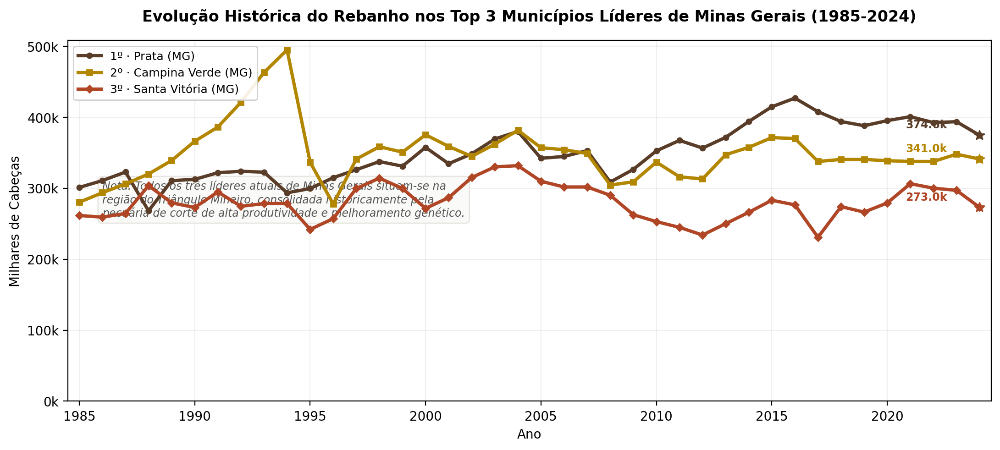

A Peça que Falta no Quebra-Cabeça da Concentração
O painel nacional da PPM revela uma tendência marcante: o município mediano brasileiro manteve seu rebanho estável em cerca de 14.000 cabeças, enquanto a média subiu impulsionada por novos polos de altíssima escala. No entanto, o que acontece com os polos regionais consolidados mais antigos sob restrições climáticas e transições de uso da terra?
Montes Claros (MG) serve como um caso de estudo crucial. Situada no Norte de Minas Gerais, a cidade é a "capital" regional de uma área de transição ecológica (Cerrado-Caatinga) integrada ao Semiárido. Em 1985, seu rebanho de ~146 mil cabeças era **5,3 vezes maior** do que a média dos municípios mineiros da época. Embora ainda represente um efetivo expressivo (cerca de **4 vezes** a média de MG em 2024), sua trajetória histórica é de contração e forte vulnerabilidade climática, demonstrando que a robustez das séries nacionais esconde realidades de risco regionais.
Visualização da Dinâmica Regional
Explore os três novos recortes visuais gerados a partir do painel da PPM. Clique nas figuras para ampliá-las.



Foco em Ciências Ambientais: O Choque da Seca de 2012-2017
O declínio abrupto observado após 2011 está diretamente associado à maior seca multi-ano registrada na história do Semiárido brasileiro. O Norte de Minas Gerais sofreu com anomalias de precipitação severas por 6 anos consecutivos. A escassez hídrica comprometeu o abastecimento do gado, destruiu a capacidade de rebrote das pastagens e gerou um processo em cadeia de venda emergencial para abate e mortalidade animal. Para pesquisadores de Ciências Ambientais, Montes Claros representa um termômetro claro dos impactos da vulnerabilidade climática sobre sistemas de produção pecuária extensiva.
Série Temporal Consolidada (Anos-Chave)
Tabela comparativa sintetizando a trajetória de Montes Claros em relação aos agregados estaduais e nacionais nos momentos marcantes da série histórica.
| Ano | Montes Claros (cab.) | Rank (MG) | Rank (BR) | Média (MG) | Mediana (MG) | Média (BR) | Mediana (BR) |
|---|---|---|---|---|---|---|---|
| 1985 | 145.992 | 19º | 153º | 27.490 | 14.581 | 31.346 | 14.273 |
| 1995 | 120.000 | 23º | 262º | 26.649 | 14.407 | 32.506 | 13.375 |
| 2005 | 138.971 | 21º | 325º | 25.092 | 13.161 | 37.501 | 13.064 |
| 2011 (Pico) | 170.200 | 15º | 253º | 28.028 | 15.200 | 38.505 | 13.500 |
| 2017 (Fim da Seca) | 90.835 | 42º | 541º | 25.758 | 15.000 | 38.823 | 12.500 |
| 2024 | 103.677 | 36º | 534º | 25.867 | 15.063 | 43.016 | 14.000 |
Os Gigantes de Minas Gerais: Municípios Líderes (2024)
Como Montes Claros se posiciona frente aos verdadeiros titãs do rebanho bovino mineiro? Abaixo, apresentamos a dinâmica de crescimento e o ranking dos maiores produtores de gado do estado.

Ranking dos 10 Maiores Rebanhos Municipais de Minas Gerais (2024)
Estes são os dez maiores municípios em efetivo bovino no estado de Minas Gerais em 2024. Montes Claros ocupa atualmente a 36ª posição estadual. Os dez líderes somam mais de 2,56 milhões de cabeças, concentrando-se no Triângulo Mineiro e no Noroeste do estado:
| Posição | Município | Mesorregião | Cód. IBGE | Rebanho (2024) |
|---|---|---|---|---|
| 1º | Prata | Triângulo Mineiro / Alto Paranaíba | 3152808 | 374.558 |
| 2º | Campina Verde | Triângulo Mineiro / Alto Paranaíba | 3111101 | 341.046 |
| 3º | Santa Vitória | Triângulo Mineiro / Alto Paranaíba | 3159803 | 273.000 |
| 4º | Unaí | Noroeste de Minas | 3170404 | 270.609 |
| 5º | João Pinheiro | Noroeste de Minas | 3136306 | 226.768 |
| 6º | Carlos Chagas | Vale do Mucuri | 3113701 | 225.330 |
| 7º | Patos de Minas | Triângulo Mineiro / Alto Paranaíba | 3148004 | 222.223 |
| 8º | Paracatu | Noroeste de Minas | 3147006 | 206.319 |
| 9º | Gurinhatã | Triângulo Mineiro / Alto Paranaíba | 3129103 | 192.000 |
| 10º | Carneirinho | Triângulo Mineiro / Alto Paranaíba | 3114550 | 187.514 |
Fatores Concorrentes: Urbanização e Transição do Uso do Solo
Além do fator climático crucial, a dinâmica de Montes Claros também ilustra a teoria de transição do uso do solo em economias regionais em desenvolvimento. Nas últimas quatro décadas, Montes Claros passou por uma intensa expansão urbana e industrialização, consolidando-se como o polo de comércio, saúde, educação e serviços para todo o Norte de Minas Gerais.
Esse crescimento urbano gerou dois efeitos diretos na pecuária:
- Fragmentação de Terras e Especulação Imobiliária: Antigas fazendas pecuárias localizadas nos arredores da cidade foram loteadas para expansão residencial e industrial, empurrando as atividades agrícolas para mais longe.
- Silvicultura de Eucalipto: A introdução de grandes maciços florestais de eucalipto (para abastecer a indústria metalúrgica e de celulose do estado) substituiu áreas de pastagem natural ou degradada em porções significativas do município.
- Pecuária Intensiva de Leite: Houve uma migração parcial da pecuária extensiva de corte (que demanda grandes extensões de terra) para sistemas semi-intensivos ou intensivos de leite, os quais mantêm rebanhos menores, mas com maior produtividade por hectare.